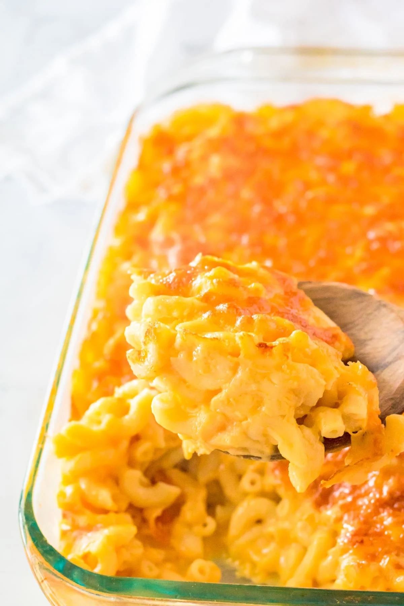

Home
Rory's Mac & Cheese

Description
A copycat recipe of Chick-Fil-A's gooey, creamy, crispy mac and cheese. This recipe is easy to make and sure to keep your kids(and adults) happy!
Ingredients
- Elbow macaroni
- Butter
- All purpose flour
- Salt
- Paprika
- Whole milk
- Egg yolk
- American cheese
- Extra sharp cheddar cheese(separated)
- Italian blend cheese
Steps
- Boil water and add macaroni
- Melt butter on medium low heat
- Add butter and cook until smooth
- Add milk and cook until no clumps remain
- In a separate bowl, add yolk and spoonful of hot milk mixture and whisk
- Add yolk mixture to pan
- Add cheeses and cook until melted
- Add spices
- Add macaroni
- Place everything in baking pan
- Top with remaining cheddar cheese
- Place in oven and broil until cheese is golden brown